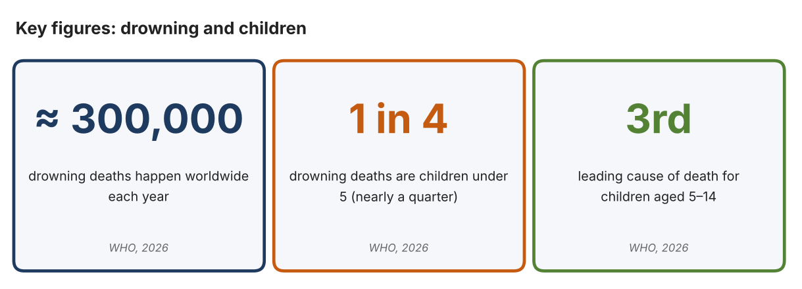
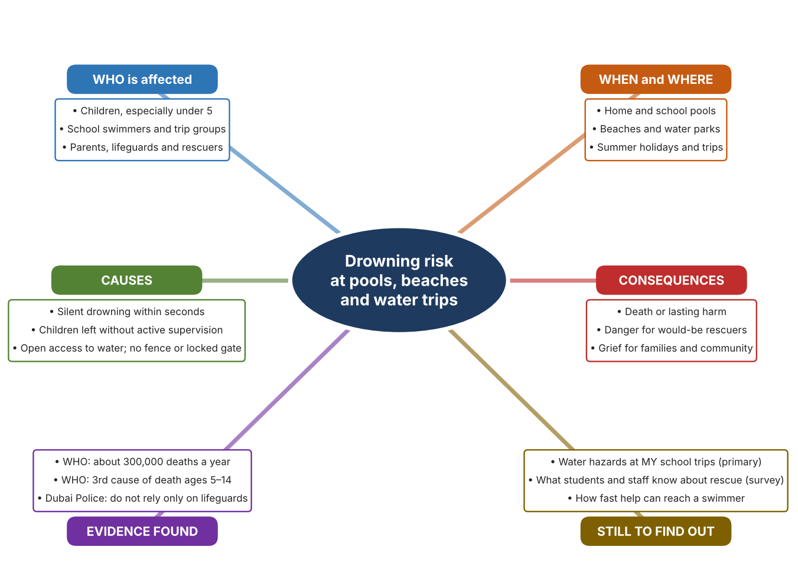
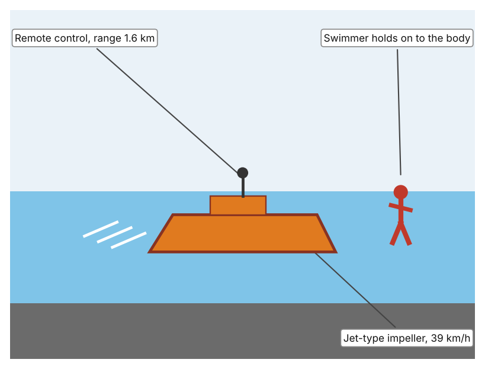
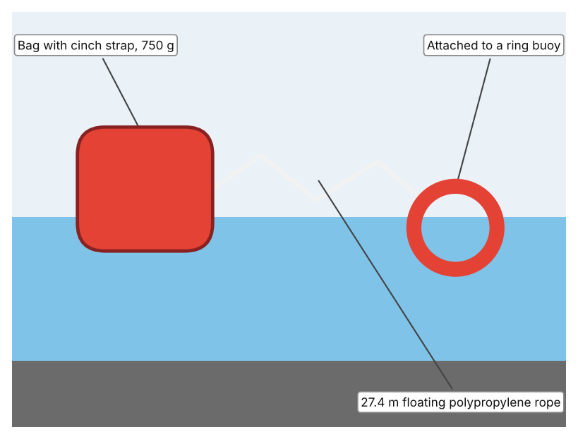
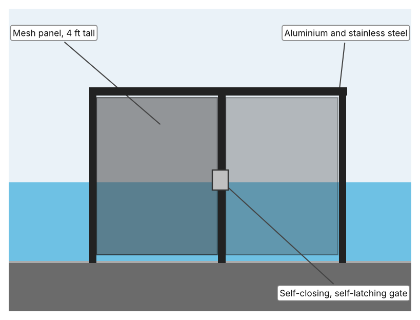

A1 · Design need
Identify and explain the problem faced by your client and community.
My client is the Aquatics and Water Safety Committee of a Dubai school, represented by its Head of Physical Education. Students swim in the school pool, visit beaches and water parks on trips and spend summer holidays near water. The committee is concerned that a child can get into serious trouble in water in a few seconds, in front of people who may not notice, and it needs the risk of drowning and the danger to anyone who tries to help to be reduced.
The people most affected are children and teenagers who swim, play or work near water. Younger children are at most risk, and they are rarely strong swimmers. Teachers, lifeguards and parents are a second group because they are responsible for supervision and may put themselves in danger when they try to help someone who is struggling.
The need is real because drowning is common and fast. The World Health Organization reports that around 300,000 people drown each year, children under 5 account for nearly a quarter of these deaths, and drowning is the third leading cause of death for children aged 5 to 14 (World Health Organization, “Drowning”). The WHO also says the risk rises when children are in water without active adult supervision. Dubai Police warn that children can drown silently within seconds, often without people nearby noticing, and that parents should not rely only on lifeguards or flotation devices (Borbon). In 2019 police in the UAE said negligence is a major reason for children drowning and advised fencing pools, locking doors and never leaving a child unattended (Ahmad).
Figure 1 summarises the key numbers. The WHO figures are global, so I still need evidence from my own school's water activities. In my own words: because drowning is quiet and quick, a child's safety cannot depend only on someone happening to look at the right moment. Figure 2 is my mind map of the problem.
320 words


A2 · Research plan
Six research questions of different types, each with a priority, a research type and evidence.
| # | Question | Priority | Primary / secondary | Evidence | Brief answer |
|---|---|---|---|---|---|
| 1 | Factual: How many people drown each year, and which age groups are most at risk? | High | Secondary | WHO fact sheet, 1 May 2026 (Appendix A, Source 1) | About 300,000 deaths a year. Under-5s are nearly a quarter; drowning is the 4th cause of death for ages 1–4 and the 3rd for ages 5–14. |
| 2 | Factual: What do UAE police advise to prevent child drowning at pools and beaches? | High | Secondary | Gulf News, 12 July 2026 (Appendix A, Source 3); Gulf News, 11 June 2019 (Source 2) | Constant direct supervision within reach; fence pools and lock doors; life jackets; a competent swimmer with rescue skills present; never leave a child unattended. |
| 3 | Conceptual: Why can a person drown silently and quickly, and why is it dangerous for a bystander to try to rescue them? | Medium | Secondary | Gulf News, 12 July 2026 (Appendix A, Source 3); WHO, 2026 (Source 1) | Children can drown within seconds, often unnoticed. The WHO lists safe rescue skills as a prevention measure, which implies that unprepared rescue is risky. This last point is my interpretation. |
| 4 | Debatable: Should drowning prevention rely mainly on supervision by adults, physical barriers such as fences, or equipment for rescue? | Medium | Secondary | Appendix A, Sources 1, 2, 3, 4, 5 and 6 | Supervision is essential but can lapse; barriers work at all times but only where installed; rescue equipment helps only after trouble starts. My view: prevention (barriers and supervision) first, rescue second. |
| 5 | Debatable (challenges my assumption, UAE source): Lifeguards and flotation devices make water safe, so is any more needed? | High | Secondary | Gulf News, 12 July 2026 (Appendix A, Source 3) | Dubai Police say parents should not rely solely on lifeguards or flotation devices because drowning is silent and fast. Conclusion: these are helpful but not enough on their own. |
| 6 | Factual (primary): What water hazards and rescue equipment exist at our own pool and on school trips, and how confident are people to help? | High | Primary | Own water-safety audit and student survey (Appendix A, Sources 7 and 8) | [Student data needed: write the audit findings and survey averages, then two sentences on the main pattern. Audit from the poolside only; never enter water alone.] |
A3 · Existing products
Three significantly different products, each analysed with ACCESS FM, with pros and cons.
Product 1: Remote-control rescue buoy (EMILY)

Illustration by the author based on “Emily” rescue buoy, New Atlas (Appendix A, Source 4). [Student: replace with a photo from the source, cited MLA 9]
Product 2: Ring buoy throw bag with 90 ft rope (Mustang)

Illustration by the author based on “Mustang Ring Buoy Throw Bag,” NavStore (Appendix A, Source 5). [Student: replace with a photo from the source, cited MLA 9]
Product 3: Self-closing pool safety gate (Leslie's)

Illustration by the author based on “DIY Square Gate – 48 in Black,” Leslie's (Appendix A, Source 6). [Student: replace with a photo from the source, cited MLA 9]
ACCESS FM analysis
| ACCESS FM | Product 1 | Product 2 | Product 3 |
|---|---|---|---|
| Aesthetics | Orange or red body designed to be seen in the water; the article gives no colour (New Atlas). | Bag with a cinch strap; colour is not listed (NavStore). | Black powder-coated frame with mesh, designed to blend into a pool fence (Leslie's). |
| Cost | US$3,500 in 2010, with battery options costing from about $1,400 (New Atlas). | $47.95 on sale (was $59.53); sold out (NavStore). | $449.99; out of stock and for members only (Leslie's). |
| Customer | Lifeguards who reach swimmers caught in riptides without putting more rescuers in danger. | Anyone near water who can throw a line to a person in trouble. | Pool owners who want to keep young children from entering the pool area. |
| Environment | Electric; the first unit was built for NOAA in 2009. Run time is up to 15 minutes (New Atlas). | Polypropylene rope floats; the page gives no information on environmental impact. | Aluminium and stainless steel; UV-resistant mesh (Leslie's). |
| Size | 11 kg (24 lb); size not stated (New Atlas). | 750 g with the bag; box 3 × 7 × 14 in (NavStore). | 30 in wide and 48 in tall (Leslie's). |
| Safety | Can right itself if capsized; one version carries a camera and radio. Bystander view: a swimmer can hold on without a rescuer entering the water. | Rope tensile strength 862 kg. Bystander view: the rescuer stays out of the water but must throw accurately. | Meets CPSC recommendations for 4 ft height and 30 in opening; self-latching. Bystander view: works all the time, with no one needing to watch. |
| Function | Reaches swimmers at up to 39 km/h and 1.6 km from shore; returns them or is towed back; deploys in about 30 seconds. | Throws a line out to a person who can then be pulled in. | Closes and latches itself to keep a child away from the pool. |
| Materials | Impeller body; materials are not stated (New Atlas). | Polypropylene rope in a cinch-strap bag (NavStore). | Powder-coated aluminium frame and Textilene PVC-coated nylon mesh (Leslie's). |
Pros and cons
| Product 1 | Product 2 | Product 3 | |
|---|---|---|---|
| Pro | Fast, keeps rescuers out of danger and can carry a camera or sonar. | Very cheap, light and simple, with a strong floating rope. | Works around the clock without staff, and stops access before there is an emergency. |
| Con | Costs thousands, is heavy and needs a trained operator and a short run time. | Needs a person who can throw accurately and stay calm; range limited to the rope. | Does nothing once a child is in the water, and the page shows it out of stock. |
A4 · Design brief
Restate the need, summarise the research and the existing products, and state the design intent.
My client, the Aquatics and Water Safety Committee of a Dubai school, needs the risk of drowning, and the danger to anyone who tries to help, to be reduced for students at the school pool, on trips and near water. The problem is serious: about 300,000 people drown every year, under-5s account for nearly a quarter of deaths, and drowning is the third leading cause of death for ages 5 to 14 (Appendix A, Source 1).
My research shows that drowning is silent and fast. Dubai Police say children can drown within seconds, often without people nearby noticing, and parents should not rely solely on lifeguards or flotation devices (Appendix A, Source 3). UAE police also advise fences, locked doors, life jackets and never leaving a child unattended (Appendix A, Source 2), and the WHO lists fencing and basic rescue skills among prevention measures (Appendix A, Source 1). My debatable questions led me to decide that prevention comes before rescue, and my challenged assumption (that lifeguards and floats are enough) was shown to be wrong. I still need evidence from my own school, which I will collect with my audit and survey (Appendix A, Sources 7 and 8).
I analysed three very different existing solutions. A remote-control rescue buoy travels at up to 39 km/h for 1.6 km, so a rescuer need not enter the water, but it cost US$3,500 in 2010 and has a run time of about 15 minutes (Appendix A, Source 4). A throw bag with 27.4 m of floating rope costs $47.95 and weighs 750 g, but it needs a person who can throw accurately (Appendix A, Source 5). A self-closing, self-latching gate 4 ft tall works all the time to keep children away from a pool, but costs $449.99 and does nothing once a child is in the water (Appendix A, Source 6). They give me three ideas for inspiration: reach a swimmer from a distance, pull someone in from the shore, and stop access in the first place. Each has a weakness that another covers.
My design intent is therefore to create a solution that reduces the chance of a child drowning, or helps someone to be reached safely if they get into trouble, without putting a rescuer at risk. It must be affordable for a school, simple enough for staff and students to use with brief training, dependable in hot and wet conditions, and safe in itself. I have deliberately not fixed what form it will take. That decision will be made in Criterion B, after I analyse my own audit and survey against the evidence in Appendix A.
436 words
Appendix A · Research notes and sources
Secondary sources in MLA 9, with notes and where each source is used.
| # | Source (MLA 9) | Key notes | Used in |
|---|---|---|---|
| 1 | World Health Organization. “Drowning.” WHO, 1 May 2026, www.who.int/news-room/fact-sheets/detail/drowning. Accessed 21 Oct. 2026. | About 300,000 deaths a year; under-5s nearly a quarter; 4th cause of death ages 1–4 and 3rd ages 5–14; risk rises outside active adult supervision; prevention includes fencing and safe rescue skills. | A1; A2 Q1, Q3 and Q4; A4. |
| 2 | Ahmad, Anwar. “Abu Dhabi Police: Parental Negligence Major Cause of Children Drowning.” Gulf News, updated 11 June 2019, gulfnews.com/uae/abu-dhabi-police-parental-negligence-major-cause-of-children-drowning-1.64513868. Accessed 21 Oct. 2026. | Negligence is a major reason for child drowning. Advice: fence pools, lock doors, life jackets, never leave a child unattended, a competent swimmer with rescue skills present. No statistics given. | A1; A2 Q2; A4. |
| 3 | Borbon, Christian. “Dubai Police Urge Parents to Closely Supervise Children at Pools and Beaches.” Gulf News, updated 12 July 2026, gulfnews.com/amp/story/uae%2Fdubai-police-urge-parents-to-closely-supervise-children-at-pools-and-beaches-1.500605316. Accessed 21 Oct. 2026. | Children can drown silently within seconds. Constant direct supervision within reach. Do not rely solely on lifeguards or flotation devices. | A1; A2 Q2, Q3 and Q5; A4. |
| 4 | “Emily: The Emergency Rescue Buoy.” New Atlas, 19 Dec. 2010, newatlas.com/emily-motorized-rescue-buoy/17297/. Accessed 21 Oct. 2026. | 11 kg; 39 km/h; up to 15 minutes; 1.6 km radio range; about 30 seconds to deploy; US$3,500 (2010); camera or sonar versions. Article is from 2010. | A2 Q4; A3 Product 1; A4. |
| 5 | “Mustang Ring Buoy Throw Bag – 90' Rope.” NavStore, navstore.com/products/mustang-ring-buoy-throw-bag-90-rope-mrd190-0-0-215. Accessed 21 Oct. 2026. | $47.95; 90 ft (27.4 m) floating polypropylene rope; 750 g; tensile strength 862 kg; cinch-strap bag. | A2 Q4; A3 Product 2; A4. |
| 6 | “DIY Square Gate – 48" Black.” Leslie's, lesliespool.com/diy-square-gate---48-black/24009.html. Accessed 21 Oct. 2026. | $449.99; 4 ft × 30 in; aluminium and stainless steel with Textilene mesh; self-closing, self-latching; meets CPSC recommendations; out of stock. | A2 Q4; A3 Product 3; A4. |
| 7 | Primary: water-safety audit sheet, completed by the student on [date]. Accessed own data. | [Student: summarise your counts.] | A2 primary question; A4. |
| 8 | Primary: survey of [number] people, completed on [date]. | [Student: summarise your averages.] | A2 primary question; A4. |
Primary research instrument 1: water-safety audit sheet
Student audits the poolside and trip plans without entering the water.
| Location | Fence or locked gate (Y/N) | Rescue equipment visible (Y/N) | Supervising adults in reach | Warning signs (Y/N) | Notes |
|---|---|---|---|---|---|
| School pool | |||||
| Pool entrance | |||||
| Beach or water-park trip plan | |||||
| Changing area |
Primary research instrument 2: survey
Rate each statement from 1 (strongly disagree) to 5 (strongly agree). Collect responses with permission and record no names.
| Statement | 1 | 2 | 3 | 4 | 5 | Total responses |
|---|---|---|---|---|---|---|
| I know how to help someone in trouble in water without putting myself in danger. | ||||||
| I know where rescue equipment is kept at our pool or on trips. | ||||||
| Adults at the pool or beach watch us closely all the time. | ||||||
| I feel confident about my swimming skills. |